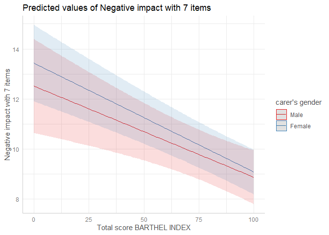

Lüdecke D (2018). ggeffects: Tidy Data Frames of Marginal Effects from Regression Models. Journal of Open Source Software, 3(26), 772. doi: 10.21105/joss.00772
Why do we need (marginal/conditional) effects or (adjusted) predicted values?
After fitting a model, it is useful generate model-based estimates (expected values, or adjusted predictions) of the response variable for different combinations of predictor values. Such estimates can be used to make inferences about relationships between variables - adjusted predictions tell you: what is the expected ouctome for certain values or levels of my predictors?
Adjusted predictions or marginal means are often easier to understand than raw regression coefficients. In particular, their visualization allows to intuitively get the idea of how predictors and outcome are associated, even for complex models.
Aims of this package
ggeffects is a light-weight package that aims at easily calculating adjusted predictions and estimated marginal means at meaningful values of covariates from statistical models. Furthermore, it is possible to compute contrasts or pairwise comparisons, to test predictions and differences in predictions for statistical significance. Finally, you can easily produce nice figures to visualize the results.
What you basically would need for your workflow is:
-
predict_response()(understand your results) -
test_predictions()(check for “significant” results) -
plot()(communicate your results)
Three core ideas describe the philosophy of the function design and help users to achieve the above mentioned goals:
Functions are type-safe and always return a data frame with the same, consistent structure;
there is a simple, unique approach to calculate adjusted predictions and estimated marginal means for many different models;
the package supports “labelled data” (Lüdecke 2018), which allows human readable annotations for graphical outputs.
This means, users do not need to care about any expensive steps after modeling to visualize the results. The returned as data frame is ready to use with the ggplot2-package, however, there is also a plot()-method to easily create publication-ready figures.
Adjusted predictions or estimated marginal means are always calculated on the response scale, which is the easiest and most intuitive scale to interpret the results.
It is easy to start, you just need one function: predict_response(), and two arguments: the model and the “focal terms”, i.e. the predictors that you are mainly interested in. Examples are shown below.
So, when do I need the ggeffects package?
You should use ggeffects…
… when you want to understand how predictors and outcome are related, no matter whether you have simple or complex models, interaction or transformed terms. See how to start in this vignette. The syntax for the ggeffects functions is super easy and consistent across the different type of models and complexity.
… when you want to perform pairwise comparisons, in order to see whether there are statistically significant differences in the association of, for instance, different groups or categories of your predictors and your outcome (“effects”, or sometimes “marginal effects”). There are several vignettes describing this in detail, starting with this vignette.
… when you need impressive figures instead of long, confusing tables to describe your results. There are several examples in the documentation, for example this vignette.
… and even when you want to check, whether your model appropriately describes your data. See this vignette to learn more about how to use ggeffects for model diagnostics.
A workflow in R would then include using following functions in this order: predict_response(), plot(), and test_predictions() - that’s all you need! See also this example workflow using logistic regression.
Installation
| Type | Source | Command |
|---|---|---|
| Release | CRAN | install.packages("ggeffects") |
| Development | r - universe | install.packages("ggeffects", repos = "https://strengejacke.r-universe.dev") |
| Development | GitHub | remotes::install_github("strengejacke/ggeffects") |
Or you can run ggeffects::install_latest() to install the latest development version from r-universe.
Adjusted predictions at…: marginalizing over non-focal predictors
predict_response() is a wrapper around three “workhorse” functions, ggpredict(), ggemmeans() and ggaverage(). Depending on the value of the margin argument, predict_response() calls one of those functions, with different arguments. It’s important to note that:
Predictions are always returned on the response scale, no matter which model is used. This is the most intuitive scale to interpret your results (the predicted values).
The response is predicted at the values or levels of your focal terms, i.e. you specify the predictors you are mainly interested in, using the
termsargument. The predicted values are calculated for these values, while all other predictors are marginalized over.
The margin argument in predict_response() indicates how to marginalize over the non-focal predictors, i.e. those variables that are not specified in terms. Each option answers slightly different questions. Possible values are:
-
"mean_reference"and"mean_mode":"mean_reference"callsggpredict(), i.e. non-focal predictors are set to their mean (numeric variables), reference level (factors), or “most common” value (mode) in case of character vectors."mean_mode"callsggpredict(typical = c(numeric = "mean", factor = "mode")), i.e. non-focal predictors are set to their mean (numeric variables) or mode (factors, or “most common” value in case of character vectors).Question answered: “What is the predicted (or: expected) value of the response at meaningful values or levels of my focal terms for a ‘typical’ observation in my data?”, where ‘typical’ refers to certain characteristics of the remaining predictors.
-
"marginalmeans": callsggemmeans(), i.e. non-focal predictors are set to their mean (numeric variables) or marginalized over the levels or “values” for factors and character vectors. Marginalizing over the factor levels of non-focal terms computes a kind of “weighted average” for the values at which these terms are hold constant. There are different weighting options that can be chosen with theweightsargument.Question answered: “What is the predicted (or: expected) value of the response at meaningful values or levels of my focal terms for an ‘average’ observation in my data?”. It refers to randomly picking a subject of your sample and the result you get on average.
-
"empirical"(or on of its aliases,"counterfactual"or"average"): callsggaverage(), i.e. non-focal predictors are marginalized over the observations in your sample. The response is predicted for each subject in the data and predicted values are then averaged across all subjects, aggregated/grouped by the focal terms. Averaging is applied to “counterfactual” predictions (Dickerman and Hernán 2020). There is a more detailed description in this vignette.Question answered: “What is the predicted (or: expected) value of the response at meaningful values or levels of my focal terms for the ‘average’ observation in the population?”. It does not only refer to the actual data in your sample, but also “what would be if” we had more data, or if we had data from a different population.
Documentation and Support
Please visit https://strengejacke.github.io/ggeffects/ for documentation and vignettes. For questions about the functionality, you may either contact me via email or also file an issue.
ggeffects supports many different models and is easy to use
Adjusted predictions can be calculated for many different models. Currently supported model-objects are: averaging, bamlss, bayesglm, bayesx, betabin, betareg, bglmer, bigglm, biglm, blmer, bracl, brglm, brmsfit, brmultinom, cgam, cgamm, clm, clm2, clmm, coxph, feglm, fixest, flac, flic, gam, Gam, gamlss, gamm, gamm4, gee, geeglm, glimML, glm, glm.nb, glm_weightit, glmer.nb, glmerMod, glmgee, glmmPQL, glmmTMB, glmrob, glmRob, glmx, gls, hurdle, ivreg, lm, lm_robust, lme, lmerMod, lmrob, lmRob, logistf, logitr, lrm, mblogit, mclogit, MCMCglmm, merMod, merModLmerTest, MixMod, mixor, mlogit, multinom, multinom_weightit, negbin, nestedLogit, nlmerMod, ols, ordinal_weightit, orm, phyloglm, phylolm, plm, polr, rlm, rlmerMod, rq, rqs, rqss, sdmTMB, speedglm, speedlm, stanreg, survreg, svyglm, svyglm.nb, tidymodels, tobit, truncreg, vgam, vglm, wblm, wbm, Zelig-relogit, zeroinfl, zerotrunc.
Support for models varies by marginalization method (the margin argument), i.e. although predict_response() supports most models, some models are only supported exclusively by one of the four downstream functions (ggpredict(), ggemmeans(), ggeffect() or ggaverage()). This means that not all models work for every margin option of predict_response(). Other models not listed here might work as well, but are currently not tested.
Interaction terms, splines and polynomial terms are also supported. There is a generic plot()-method to plot the results using ggplot2.
Examples
The returned data frames always have the same, consistent structure and column names, so it’s easy to create ggplot-plots without the need to re-write the function call. x and predicted are the values for the x- and y-axis. conf.low and conf.high could be used as ymin and ymax aesthetics for ribbons to add confidence bands to the plot. group can be used as grouping-aesthetics, or for faceting.
predict_response() requires at least one, but not more than four terms specified in the terms-argument. Predicted values of the response, along the values of the first term are calculated, optionally grouped by the other terms specified in terms.
Adjusted predictions for one focal predictor
library(ggeffects)
library(splines)
library(datawizard)
data(efc, package = "ggeffects")
efc <- to_factor(efc, c("c161sex", "e42dep"))
fit <- lm(barthtot ~ c12hour + bs(neg_c_7) * c161sex + e42dep, data = efc)
predict_response(fit, terms = "c12hour")
#> # Predicted values of barthtot
#>
#> c12hour | Predicted | 95% CI
#> ----------------------------------
#> 4 | 89.91 | 84.18, 95.63
#> 12 | 89.34 | 83.62, 95.06
#> 22 | 88.63 | 82.90, 94.36
#> 36 | 87.64 | 81.88, 93.40
#> 49 | 86.72 | 80.90, 92.53
#> 70 | 85.23 | 79.30, 91.16
#> 100 | 83.10 | 76.92, 89.29
#> 168 | 78.28 | 71.24, 85.33
#>
#> Adjusted for:
#> * neg_c_7 = 11.83
#> * c161sex = Male
#> * e42dep = independentA possible call to ggplot could look like this:
library(ggplot2)
mydf <- predict_response(fit, terms = "c12hour")
ggplot(mydf, aes(x, predicted)) +
geom_line() +
geom_ribbon(aes(ymin = conf.low, ymax = conf.high), alpha = 0.1)
However, there is also a plot()-method. This method uses convenient defaults, to easily create the most suitable plot for the predictions.
mydf <- predict_response(fit, terms = "c12hour")
plot(mydf)
Adjusted predictions for several focal predictors
With three variables, predictions can be grouped and faceted.
result <- predict_response(fit, terms = c("neg_c_7", "c161sex", "e42dep"))
# we want a more compact table, thus we use `print()` explicitly
print(result, collapse_table = TRUE, collapse_ci = TRUE)
#> # Predicted values of barthtot
#>
#> neg_c_7 | c161sex | e42dep | Predicted (95% CI)
#> -----------------------------------------------------------------
#> 7 | Male | independent | 93.73 (87.01, 100.44)
#> 12 | | | 86.89 (81.09, 92.70)
#> 17 | | | 80.62 (73.69, 87.54)
#> 28 | | | 148.54 (85.66, 211.42)
#> 7 | | slightly dependent | 87.41 (81.27, 93.56)
#> 12 | | | 80.58 (76.32, 84.84)
#> 17 | | | 74.31 (68.46, 80.15)
#> 28 | | | 142.23 (79.71, 204.75)
#> 7 | | moderately dependent | 78.29 (72.08, 84.49)
#> 12 | | | 71.46 (67.64, 75.27)
#> 17 | | | 65.18 (59.75, 70.60)
#> 28 | | | 133.10 (70.44, 195.76)
#> 7 | | severely dependent | 41.93 (35.66, 48.21)
#> 12 | | | 35.10 (30.98, 39.22)
#> 17 | | | 28.82 (23.41, 34.24)
#> 28 | | | 96.75 (34.08, 159.41)
#> 7 | Female | independent | 98.04 (93.06, 103.02)
#> 12 | | | 86.61 (81.85, 91.37)
#> 17 | | | 82.58 (77.33, 87.82)
#> 28 | | | 81.57 (64.41, 98.73)
#> 7 | | slightly dependent | 91.73 (87.89, 95.57)
#> 12 | | | 80.30 (77.43, 83.17)
#> 17 | | | 76.26 (72.57, 79.96)
#> 28 | | | 75.26 (58.64, 91.87)
#> 7 | | moderately dependent | 82.60 (78.62, 86.59)
#> 12 | | | 71.17 (68.79, 73.56)
#> 17 | | | 67.14 (63.95, 70.33)
#> 28 | | | 66.13 (49.52, 82.74)
#> 7 | | severely dependent | 46.25 (41.93, 50.57)
#> 12 | | | 34.82 (32.27, 37.37)
#> 17 | | | 30.78 (27.67, 33.90)
#> 28 | | | 29.78 (13.33, 46.23)
#>
#> Adjusted for:
#> * c12hour = 42.10
ggplot(result, aes(x = x, y = predicted, colour = group)) +
geom_line() +
facet_wrap(~facet)
plot() works for this case, as well:
plot(result)
Contrasts and pairwise comparisons
Next, an example of an interaction term. We want to know whether the two slopes are significantly different from each other.
fit <- lm(neg_c_7 ~ c12hour + barthtot * c161sex + e42dep, data = efc)
result <- predict_response(fit, c("barthtot", "c161sex"))
plot(result)
This can be achieved by test_predictions().
test_predictions(result)
#> # (Average) Linear trend for barthtot
#>
#> c161sex | Contrast | 95% CI | p
#> --------------------------------------------
#> Male-Female | 0.01 | -0.01, 0.03 | 0.466We can conclude that slopes (or “linear trends”) of barthtot for the different groups of c161sex are not statistically significantly different from each other.
More features are explained in detail in the package-vignettes.
Citation
In case you want / have to cite my package, please use citation('ggeffects') for citation information:
Lüdecke D (2018). ggeffects: Tidy Data Frames of Marginal Effects from Regression Models. Journal of Open Source Software, 3(26), 772. doi: 10.21105/joss.00772